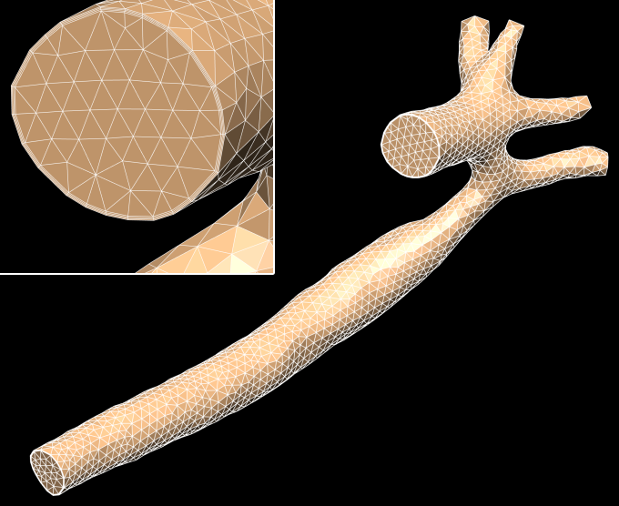

Original data made available with permission of original authors. FieldML v0.4 and 0.5 representation created by Auckland Bioengineering Institute.
This is a aortic coarctation model with four vessel branches in the aortic arch: namely the right subclavian artery, right common carotid artery, left common carotid artery and the left subclavian artery. The coarctation index (area ratio of the narrowest section to the normal section of the vessel) is 0.41. Clinical measurement gave a systolic peak to peak pressure gradient of 20.86mmHg, while the CFD simulation predicted a gradient of 24.04mmHg, which agreed well with the clinical data.
The model here is a coarse mesh for demonstration purposes. The CFD calculations described in an upcoming publication use a much denser mesh with 375695 nodes, 555027 tetrahedral elements, and 543720 prism elements. The usefulness of this type of model is described in the citation below.
Accuracy vs. Computational Time: Translating Aortic Simulations to the Clinic. Brown A.G., Shi Y., Marzo A., Staicu C., Valverde I., Beerbaum P., Lawford P., Hose D.R. Journal of Biomechanics, 45(3), pp516-523, 2012 PubMed ID: 22189248
The model can be viewed using cmgui. In order to do this, you should clone the workspace, then load and run the view.cmgui file as a cmgui com file.
The files can be downloaded individually from the workspace.
|  |
| Visualisation of the FieldML model using cmgui 2.9.0. |